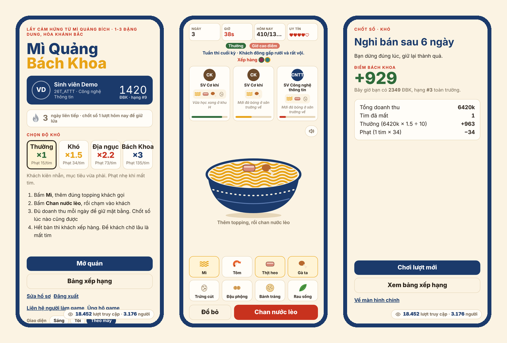

Game của sinh viên Bách Khoa Đà Nẵng
Mì Quảng Bách Khoa
Mì Quảng Bách Khoa (miquangbk.com) là game web miễn phí, chơi ngay trên điện thoại hoặc laptop, không cần cài đặt. Bạn mở một quán mì Quảng ở Hòa Khánh Bắc, gần Trường Đại học Bách Khoa – Đại học Đà Nẵng, và bán cho sinh viên các khoa. Mỗi lượt chơi cộng hoặc trừ Điểm Bách Khoa (ĐBK) cho bạn, cho lớp và cho khoa của bạn.
Game lấy cảm hứng từ quán Mì Quảng Bích ở 1-3 Đặng Dung, Hòa Khánh Bắc, Đà Nẵng. Người làm game là Nguyễn Tấn Phú, sinh viên lớp 26T_ATTT, khoa Công nghệ Thông tin. Game ra mắt ngày 24/10/2026, có tiếng Việt và tiếng Anh (tên tiếng Anh: Bach Khoa Noodles).
Chơi Mì Quảng Bách Khoa
Cách chơi
- Bấm Mì, rồi thêm đúng các topping khách gọi (tôm, thịt, trứng cút, bánh tráng…).
- Bấm Chan nước lèo, rồi bấm vào khách để bưng tô ra.
- Mỗi ngày bán dài 75 giây. Kiếm đủ doanh thu mục tiêu để giữ mặt bằng. Có thể chốt sổ bất cứ lúc nào để nhận điểm.
- Hết bàn thì khách xếp hàng. Để khách chờ lâu là mất tim, nhất là giờ cao điểm. Mất hết 5 tim thì quán đóng cửa.
- Cuối mỗi ngày ghé cửa hàng mua nâng cấp: quạt, nồi lớn, thêm bàn, wifi, fanpage, mã QR…
Trên laptop có phím tắt: 1–8 chọn món, Space chan nước lèo, Q W E R bưng cho bàn 1–4, X đổ bỏ.
Độ khó
| Độ khó | Hệ số điểm | Phạt mỗi tim mất |
|---|---|---|
| Thường | ×1 | 15 ĐBK |
| Khó | ×1.5 | 34 ĐBK |
| Địa ngục | ×2.2 | 73 ĐBK |
| Bách Khoa | ×3 | 135 ĐBK |
Tính năng
Bảng xếp hạng cá nhân, lớp và khoa
Điểm của bạn cộng vào lớp và khoa. Bảng xếp hạng có ba tab: Cá nhân, Lớp, Khoa, kèm bộ lọc chỉ xem sinh viên Bách Khoa.
Phân hạng
Hạng theo ĐBK có 7 bậc: Đồng, Bạc, Vàng, Bạch Kim, Kim Cương, Tinh Anh, Cao Thủ. Lên hoặc xuống hạng có màn hiệu ứng riêng.
Solo thách đấu
Thách đấu trực tiếp người chơi khác trong 3 ngày bán, theo luật sinh tồn hoặc so điểm. Thắng thua tính Elo, danh hiệu theo kiểu Codeforces (Newbie, Pupil, Specialist, Expert…). Có xin hoà, xem lại từng ván và xem trực tiếp người khác đang chơi.
Chuỗi ngày chơi, bạn bè và thông báo
Chơi mỗi ngày để giữ chuỗi lửa kiểu Duolingo. Kết bạn, nhận thông báo đẩy khi có người thách đấu (iPhone cần thêm game vào Màn hình chính).
Câu hỏi thường gặp
Chơi có mất tiền không?
Không. Game miễn phí, không quảng cáo, không bán vật phẩm. Tiền trong game chỉ dùng trong lượt chơi.
Có cần tài khoản không?
Không bắt buộc. Bạn có thể chơi thử ngay, không tính điểm. Đăng ký bằng email để lên bảng xếp hạng, giữ chuỗi ngày chơi và solo.
Không phải sinh viên Bách Khoa có chơi được không?
Được. Người ngoài trường có nhãn “Ngoài BK”, vẫn lên bảng xếp hạng cá nhân và solo, nhưng không tính vào bảng lớp và khoa.
Dữ liệu của tôi được dùng thế nào?
Xem mục “Về game & chính sách dữ liệu” trong game. Bạn có thể tự xoá tài khoản trong phần sửa hồ sơ.
In English: Bach Khoa Noodles
Bach Khoa Noodles (Mì Quảng Bách Khoa) is a free web game made by a student of Da Nang University of Science and Technology (Bach Khoa). You run a mì Quảng noodle shop near campus, serve students from every faculty, and earn Bach Khoa Points for yourself, your class and your faculty. It has leaderboards, ranks, real-time solo matches with Elo, replays and live spectating. Switch the game to English with the VI | EN button at the top right.
Play now